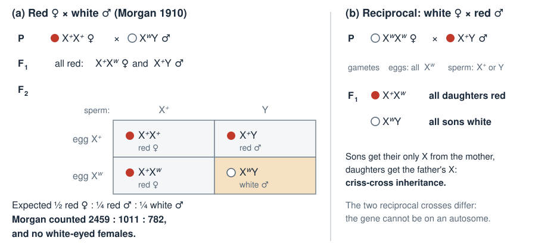
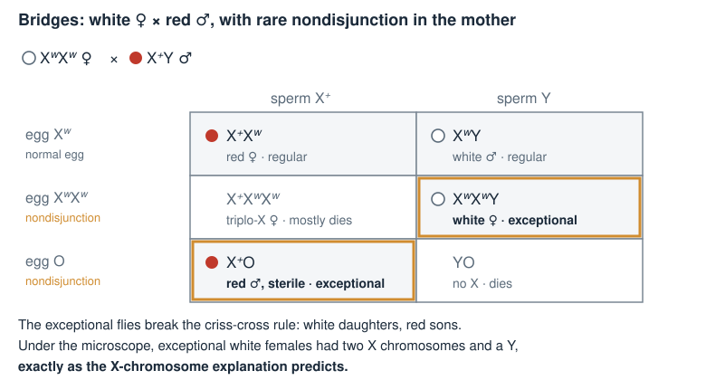
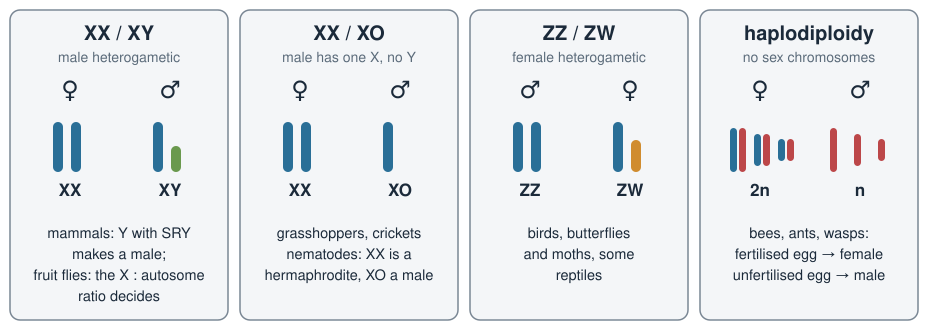

Part 2: Chromosomes and mapping. Meiosis, the chromosome theory of inheritance, X-linkage and sex determination
Basic and molecular genetics (5MO104)
About this lecture
Mendel’s factors were an abstraction: pairs of “somethings” that separate when gametes form. Around 1900–1915 geneticists found out where genes are: on chromosomes. The key evidence came from a gene that follows the X chromosome.
A careful recap of mitosis and meiosis: ploidy, homologues and sister chromatids, and what each division separates, in diagrams and in real cells.
The chromosome theory of inheritance: chromosomes behave exactly as Mendel’s factors must.
Morgan’s white-eyed fly (1910): the first gene assigned to a specific chromosome, the X.
Bridges’ nondisjunction (1916): rare exceptions that proved the theory, and how to tell in which parent and which division an error happened.
Sex determination: XY with SRY, XO, ZW and haplodiploidy.
X- and Z-linked inheritance worked by hand, and a pointer to dosage compensation.
Book: Hartwell, Genetics: From Genes to Genomes, chromosome theory of inheritance chapter.
Chromosomes: the vocabulary (recap)
Term
Meaning
Example
Homologous chromosomes (homologues)
the two copies of one chromosome in a diploid cell, one from each parent; same genes in the same order, possibly different alleles
your two chromosome 7s, one carrying CFTR from your mother, one from your father
Sister chromatids
the two identical DNA copies of one chromosome after replication, joined at the centromere
a “metaphase chromosome” is two sister chromatids
Haploid (n)
one set of chromosomes
human gametes: n = 23
Diploid (2n)
two sets, one from each parent
human body cells: 2n = 46
Autosomes / sex chromosomes
chromosomes that are the same in both sexes / that differ (X, Y)
humans: 22 autosome pairs + XX or XY
Karyotype
the chromosome set of a species, as seen in the microscope
Drosophila 2n = 8, garden pea 2n = 14
Count chromosomes by centromeres. A replicated chromosome (two chromatids) is still one chromosome.
Squashed grasshopper testis stained with aceto-orcein: the kind of material Sutton used in 1902.
Prophase I (top row, then diakinesis): chromosomes condense, homologues pair, then pull apart except at chiasmata.
Meiosis I (middle row): bivalents on the equator (metaphase I); homologues go to opposite poles (anaphase I).
Bottom row, meiosis II: two cells, each with n chromosomes; sister chromatids separate (anaphase II), giving four haploid nuclei.
The counting of the last slide, seen down a microscope.
Meiosis makes variety
Independent orientation at metaphase I. Each homologue pair faces the poles at random, independently of the others. A gamete gets the father’s or the mother’s copy of each chromosome, ½ each:
Drosophila
Pea
Human
n
4
7
23
Combinations in a gamete, 2^n
16
128
8 388 608
Combinations in a zygote, (2^n)^2
256
16 384
≈ 7 × 1013
Crossing over in prophase I mixes the homologues within a chromosome and adds far more variety. It is the subject of the next unit, Linkage & recombination.
Ignoring crossovers, the probability that a human sperm carries the grandfather’s copy of all 23 chromosomes is ½ × ½ × … = (½)23 ≈ 1 in 8.4 million.
Try it: meiosis step by step
The chromosome theory of inheritance
Around 1902–1903, Walter Sutton (grasshoppers) and Theodor Boveri (sea urchins) noticed that chromosomes in meiosis behave exactly as Mendel’s factors must:
Mendel’s factors
Chromosomes
come in pairs in the body
come in homologous pairs in diploid cells
the two members segregate into different gametes
homologues go to opposite poles in meiosis I
one of each pair in each gamete
gametes are haploid
different genes assort independently
different pairs orient independently at metaphase I
one set from each parent
one homologue from each parent
Chromosome theory of inheritance: genes are carried on chromosomes, and the behaviour of chromosomes in meiosis is the physical basis of Mendel’s laws.
A parallel is not a proof. The proof needed one gene whose inheritance follows one identifiable chromosome.
Sex chromosomes
In many animals the two sexes differ in one chromosome pair. Human and Drosophila females are XX, males XY.
The X and Y are not true homologues: the Y is small and carries few genes. In humans X ≈ 156 Mb and Y ≈ 57 Mb (you look this up in the exercise).
Short pseudoautosomal regions at the tips of X and Y let them pair and segregate in male meiosis.
A male has only one X, so he is hemizygous for X-linked genes: one recessive allele is enough to show.
Every child gets an X from the mother. The father decides the sex: his sperm carry X or Y, ½ each, so sons and daughters are born 1 : 1.
Thomas Hunt Morgan (left, as a young man) began breeding Drosophila melanogaster at Columbia University around 1908.
Why flies?
a generation in about 10 days at 25 °C;
hundreds of offspring from one female;
cheap: thousands live in milk bottles;
only 4 chromosome pairs (2n = 8).
Right: a white-eyed fly on a millimetre scale. Wild type has red eyes.
Morgan received the Nobel Prize in Physiology or Medicine in 1933.
Morgan’s white-eyed fly (1910)

Thomas Hunt Morgan found a white-eyed male in a culture of red-eyed flies. In the F2only males were white. Explanation: the eye-colour gene w is on the X, and the Y carries no copy.
Do Morgan’s numbers fit 2 : 1 : 1?
The F2, under X-linkage: ½ red ♀ : ¼ red ♂ : ¼ white ♂. Morgan counted 4252 flies:
Class
Observed
Expected
(O − E)²/E
red ♀
2459
2126
52.2
red ♂
1011
1063
2.5
white ♂
782
1063
74.3
Total
4252
4252
χ² = 129.0, df = 2
p is far below 0.001: the counts do not fit 2 : 1 : 1. But the pattern fits perfectly: no white females, white males only.
The deficit is in the white classes. In Morgan’s backcross (white ♂ × F1 ♀) the four classes should be 1 : 1 : 1 : 1, but he got 129 : 132 red to 88 : 86 white. White-eyed flies survive less well: reduced viability, as for the lethal alleles in Extensions to Mendel.
Bridges: exceptions that prove the rule

Morgan’s student Calvin Bridges: rare (well under 1 %) exceptional flies, explained by nondisjunction of the mother’s two X chromosomes, giving XX and no-X (O) eggs.
Why nondisjunction was the proof
Bridges made a prediction about chromosomes from genetic data, then checked it in the microscope:
From the eye colours: exceptional white females should be XXY, exceptional red males XO.
Cytology: the exceptional females had two X chromosomes and a Y.
Further prediction: an XXY female has three sex chromosomes to share out, so she often makes XX and Y eggs. Her offspring should include exceptions at a much higher rate than an ordinary XX female’s (secondary nondisjunction). They did.
A gene’s inheritance followed one visible chromosome, even when that chromosome misbehaved. Genes are on chromosomes.
Bridges published this as the first paper of the first issue of the journal Genetics (Bridges 1916, Genetics 1:1–52).
How is sex determined?

The sex with two different sex chromosomes is heterogametic: it makes two kinds of gamete, and so decides the sex of the offspring. Many reptiles and fish use temperature or other cues instead.
SRY: the Y makes a male, in mammals
Karyotype
Human
Drosophila
XX
female
female
XY
male
male
XXY
male (Klinefelter syndrome)
female (Bridges’ exceptions)
XO
female (Turner syndrome)
male, sterile
Rule
a Y (with SRY) makes a male
the X : autosome ratio decides
Evidence that one Y gene, SRY (sex-determining region Y, on Yp11.2), is the switch:
XX men usually carry SRY, moved onto an X by an abnormal crossover in the father’s meiosis.
Some XY women carry a mutated or deleted SRY.
XX mice given an Sry transgene develop as males (1991).
SRY starts testis development; the testis hormones then make the body male. A mutation in the androgen receptor (AR, on the X) can give an XY person with testes but a female body (exercise, Find it).
X-linked inheritance by hand
Write X-linked genotypes with the allele on the X: XAXa, XaY. Then use the three rules:
A son gets his X from his mother, and his Y from his father.
A daughter gets one X from each parent; the father’s X goes to every daughter.
Males are hemizygous: XaY shows the recessive trait.
Example 1 (Drosophila): X+Xw ♀ × XwY ♂.
½ Xw (sperm)
½ Y (sperm)
½ X+
X+Xw red ♀
X+Y red ♂
½ Xw
XwXw white ♀
XwY white ♂
All four classes ¼ each: ½ of the daughters and ½ of the sons are white.
Example 2 (human haemophilia A, X-linked recessive): carrier mother × unaffected father → ½ of sons affected, ½ of daughters carriers, no affected daughters.
Worked example: where did the error happen?
X-linked markers tell you which parent an extra or missing X came from, and sometimes which division. Red–green colour blindness: C normal, c colour-blind.
Case 1. Father XCY (normal), mother XCXc (carrier). Their son is 47,XXY and colour-blind.
Step
Reasoning
His genotype
colour-blind with two X: XcXcY
Where are the Xc from?
the father has no c, so both X came from the mother; the Y from the father
Which division?
the mother has only one Xc; two copies of it are sister chromatids: error in meiosis II
Case 2. Father XcY (colour-blind), mother XCXC. Their son is 47,XXY with normal vision.
Step
Reasoning
His genotype
he must carry the father’s Xc (the mother has none) and the father’s Y: XCXcY
Which parent, which division?
the father’s X and Y went together: X and Y pair and separate in meiosis I, so a paternal meiosis I error
Z-linkage: the same rules, sexes reversed
In birds the female is ZW and the male ZZ. Z-linked genes follow the X-linked rules with the sexes swapped:
XY (mammals, flies)
ZW (birds, butterflies)
Hemizygous sex
male, XY
female, ZW
A daughter gets her sex chromosome from
each parent (X from father, X from mother)
her father only (Z); W from mother
A son gets
X from his mother
one Z from each parent
Criss-cross pattern
mother → sons
father → daughters
Example (chickens): silver plumage (S) is dominant to gold (s), and the gene is on the Z. Gold rooster ZsZs × silver hen ZSW:
sons ZSZs: all silver; daughters ZsW: all gold.
Day-old chicks can be sexed by colour. Poultry breeders use crosses like this (exercise B8 has another one).
Dosage compensation: a pointer
Females have two X chromosomes and males one. Why don’t females make twice as much of every X-linked gene product?
Organism
Solution
Mammals
one X in each female cell is inactivated (a Barr body)
Drosophila
males double transcription from their single X
C. elegans
XX hermaphrodites halve expression from each X
In mammals the choice of which X to silence is random in each early embryonic cell, so a heterozygous female is a mosaic.
More in Part 6 (Eukaryotic gene regulation), with its own demo.
A calico cat: the orange and black patches are clones of cells with different active X chromosomes (white patches come from a separate, autosomal spotting gene).
Try it: nondisjunction
Common mistakes
Mistake
Why it is wrong
Instead
“After meiosis I the cell is still diploid: it has 46 chromatids”
ploidy counts chromosome sets, not DNA molecules
count centromeres: 23 chromosomes = n
“Homologues and sister chromatids are the same thing”
homologues come from different parents and can differ; sisters are copies
homologues separate in MI, sisters in MII
“A son can inherit his father’s X-linked allele”
a son gets his father’s Y
sons: look only at the mother
Solving X-linked crosses with one Punnett square for “all offspring”
homologues: one from each parent; sisters: identical copies after S phase
Meiosis I
homologues separate: 2n → n (reductional); Mendel’s segregation
Meiosis II
sister chromatids separate (equational)
Independent orientation
2^n gamete combinations; 223 ≈ 8.4 million in humans
Chromosome theory
genes are on chromosomes; Sutton & Boveri 1902–03
Morgan 1910
w on the X; F2 white only in males; criss-cross in the reciprocal cross
Bridges 1916
nondisjunction; exceptional XXY females and XO males, seen in the microscope
Sex determination
XY (SRY in mammals; X : A ratio in flies), XO, ZW, haplodiploidy
X-linked crosses
sons get the mother’s X; daughters get the father’s X; males are hemizygous
Origin of aneuploidy
X-linked alleles show which parent; identical copies → MII, different homologues → MI
Z-linked crosses
hens (ZW) are hemizygous; criss-cross from father to daughters
Dosage compensation
X inactivation in mammals (Part 6)
Where this leads
Next: Linkage & recombination. There are many more genes than chromosomes, so genes share chromosomes. Genes on one chromosome do not assort independently, except when crossing over separates them, and how often that happens measures the distance between them.
Three-point crosses and Human linkage & LOD scores turn this into maps.
Part 5: Rearrangements & aneuploidy. Nondisjunction in humans: trisomy 21, XXY and XO, using the same demo.
Part 6: Eukaryotic gene regulation. X inactivation and dosage compensation.